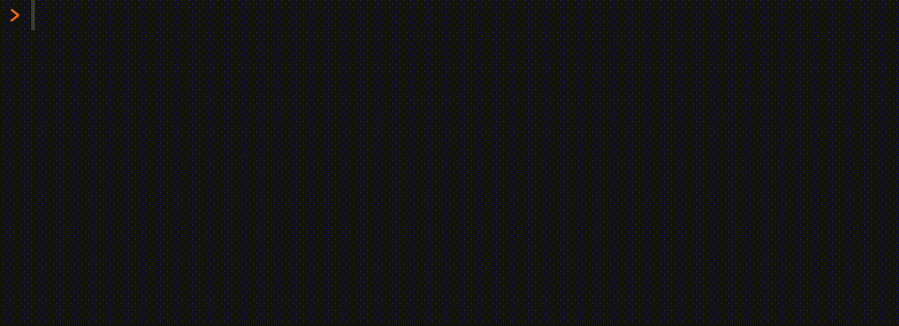

install.package("remotes") # if not yet installed
remotes::install_github("matt-dray/hiscore")
library(hiscore)
tl;dr
You can save your high score in games made with R. See the package {hiscore} for a demo.
Boot up
I wrote recently about how R is a game engine and started a list of games written in R.
All good game engines should let you save a high score, right?
So I’ve done exactly this for a tiny concept package called {hiscore}1 that contains a simple game of luck
The package runs code that saves your high score, which is retained between play sessions.
Install
You can install the package from GitHub. It has no dependencies, but you’ll need to be running R version 4, at least.
Of course, it’s just a concept and I’ve intentionally kept this as trivial as possible, but you can leave an issue with bugs or ideas.
Play
For demonstration purposes, the inbuilt game is super simple: get the longest streak of correctly guessed coinflips.
To play, run play_coinflip() and type H or T and Enter when prompted. Basically, a coinflip is simulated with sample(c("H", "T"), 1) and then compared to the user’s input, supplied from the console following a readline() call.
Keep going until you get it wrong. If you get a new high score, it’ll be saved.
play_coinflip()[H]eads or [T]ails? Answer: H
Correct! Current score: 1
[H]eads or [T]ails? Answer: H
Incorrect! Final score: 1
New high score!
New high score saved.You can retrieve the current high score with get_save_data(), which returns a little table.
get_save_data() game high_score
1 coinflip 1Of course, you could also set up the function so that it records different player names too. And you could add additional games that would get their own row in this table.
Memory
Note that the high score data is retained on your computer even if you restart your session or reboot your machine. How so?
This is thanks to the tools::R_user_dir() function, which was added to R in version 4.0. It builds system-specific paths to ‘directories for storing R-related user-specific data, configuration and cache files’ where you can save package-related information.
{hiscore} records top scores in this fashion. On my machine, the save location resolves to the following:
tools::R_user_dir("hiscore", "data")[1] "/Users/mattdray/Library/Application Support/org.R-project.R/R/hiscore"Regular readers may remember that I used R_user_dir() in the {tamRgo} package (blog, source), which lets you look after a Tamagotchi-style cyber-pet in your console. I used the function to save a pet’s ‘blueprint’ (details such as name, age and hunger level) persistently.
Retry
Now imagine you want to retry to beat that incredible top score of 1. Since you last played, you probably restarted your session or computer.
Restarting R session...But never fear: the high score was retained. You can see that when you run play_coinflip() again and are reminded of the current best.
library(hiscore)
play_coinflip()Welcome. Your current high score is 1
[H]eads or [T]ails? Answer: h
Correct! Current score: 1
[H]eads or [T]ails? Answer: t
Correct! Current score: 2
[H]eads or [T]ails? Answer: h
Incorrect! Final score: 2
New high score!
New high score saved.Great job, you doubled the previous record!
When you get a game over, the play_coinflip() function checks the current high score and compares it to the final score for the current play session. The saved data is overwritten if the score is higher.
get_save_data() game high_score
1 coinflip 2I think it’s a good idea to make it easy for people to destroy the stored data if they want, which you can do easily with delete_save_data().
delete_save_data()Really delete? [Y]es/[N]o: Y
High score data deleted.Game over
How else could this approach be used in an R gaming perspective? You could use this to save a game state, similar to what’s done for {tamRgo}. The user could input Save instead of performing a guess, which would record the current status of the game so the user can return later. But that would feel like cheating for a game like coinflip.
Speaking of, here’s a cheatcode as a bonus for reading this far:
cheat <- function(game, new_score) {
user_dir <- tools::R_user_dir("hiscore", "data")
score_path <- file.path(user_dir, "score_table.rds")
score_table <- readRDS(score_path)
score_table[score_table[["game"]] == game, "high_score"] <- new_score
saveRDS(score_table, score_path)
}
cheat("coinflip", 1e100)
get_save_data() game high_score
1 coinflip 1e+100Heh heh heh.
Environment
Session info
Last rendered: 2023-07-25 15:10:34 BSTR version 4.3.1 (2023-06-16)
Platform: aarch64-apple-darwin20 (64-bit)
Running under: macOS Ventura 13.2.1
Matrix products: default
BLAS: /Library/Frameworks/R.framework/Versions/4.3-arm64/Resources/lib/libRblas.0.dylib
LAPACK: /Library/Frameworks/R.framework/Versions/4.3-arm64/Resources/lib/libRlapack.dylib; LAPACK version 3.11.0
locale:
[1] en_US.UTF-8/en_US.UTF-8/en_US.UTF-8/C/en_US.UTF-8/en_US.UTF-8
time zone: Europe/London
tzcode source: internal
attached base packages:
[1] stats graphics grDevices utils datasets methods base
other attached packages:
[1] hiscore_0.0.0.9000
loaded via a namespace (and not attached):
[1] htmlwidgets_1.6.2 compiler_4.3.1 fastmap_1.1.1 cli_3.6.1
[5] tools_4.3.1 htmltools_0.5.5 rstudioapi_0.15.0 yaml_2.3.7
[9] rmarkdown_2.23 knitr_1.43.1 jsonlite_1.8.7 xfun_0.39
[13] digest_0.6.33 rlang_1.1.1 evaluate_0.21 Footnotes
As in ‘high score’ not as in ‘his core’.↩︎
Reuse
CC BY-NC-SA 4.0